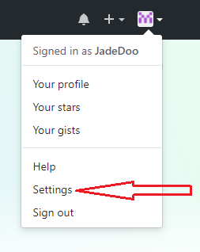
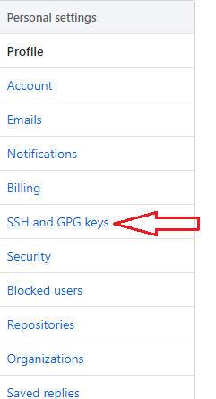
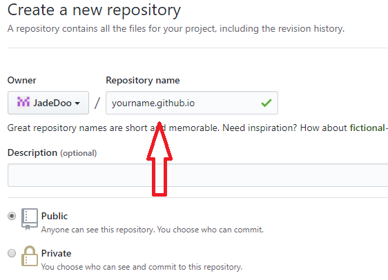

想要利用hexo和GitHub page搭建自己的博客，首先就要安装必要的工具。 在那之前你需要在Github上注册一个账号。
第一：安装nodejs
不会安装的可以看我的另外一篇文章 传送门
第二：安装git
直接到官网下载安装包，傻瓜式安装。 传送门
配置git
在任意地方右键运行git bash，执行命令
1
2$ git config --global user.name "yourname"
$ git config --global user.email "youremail"
其中yourname为你的GitHub名，youremail为你的GitHub邮箱。
继续执行
1
$ ssh-keygen -t rsa -C "youremail@example.com"
可以在用户文件夹里看到一个.ssh文件，打开其中的.pub后缀名的文件，复制里面的内容。
打开GitHub网站，点击头像，选择setting，找到 SSH and GPG keys


第三：安装hexo
新建一个已准备存放blog的文件夹，在该文件目录下右键运行git bash here，输入npm i -g hexo，执行完毕后，输入hexo -v，出现版本号证明安装成功。
第四：配置
- 在BLOG文件夹中运行
git bash，然后执行初始化命令$ hexo init。这时候hexo会自动生成说需要的文件。 - 执行完毕之后我们可以执行
$ hexo s --debug命令打开hexo自带的服务器，默认端口号为4000。点击localhost:4000 - 如果成功的话就可以看见hexo默认的模板页面，用
$ hexo new page "name"新建文章，你可以随便写点内容，现在我们就要将它发布到网上去。不过在那之前，还需要在GitHub上新建一个仓库和配置一下站点配置文件 - 打开blog文件根目录中找到
config.yml文件，修改里面的部分内容。
###第五：关联仓库
在此之前需要创建一个仓库
- 点击
New reporitory，新建仓库。
- 注意这里的仓库名称必须是此格式，
yourname.github.io。其中yourname是你的github名称。
 - 仓库有了，把本地blog上传到仓库。执行
$ hexo g -d命令。
然后就可以打开你的个人博客网站 yourname.github.io!!!